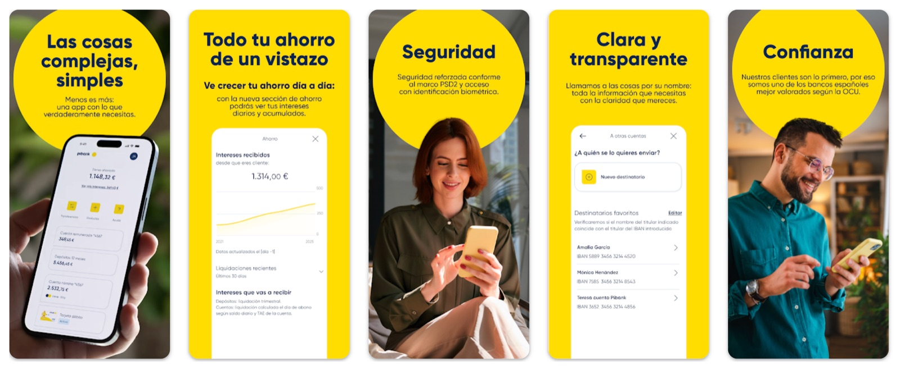
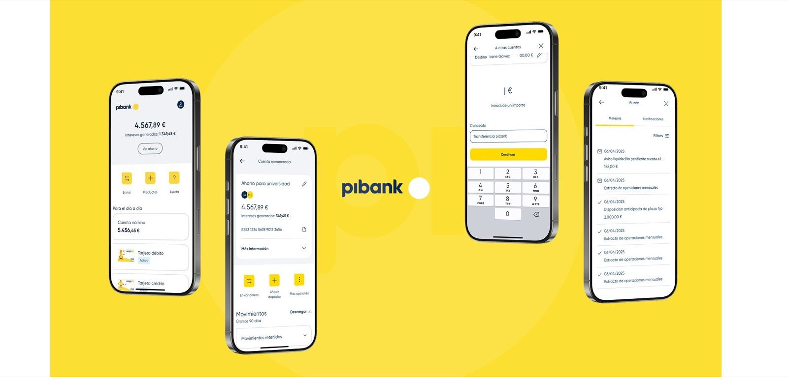

02
Pibank 2.0
Rediseño de la banca electrónica · iOS · Android · Web
Rediseño de la experiencia digital de Pibank, trabajando en la definición de flujos y casos de uso, desde la conceptualización hasta el diseño de las interfaces para web, Android e iOS.

Mi papel
UX/UI Designer, trabajando dentro de sprint junto a los equipos de negocio y desarrollo.
En qué trabajé
Definición de necesidades y requisitos, validaciones con desarrollo, arquitectura de información, flujos, conceptualización, diseño UI y preparación de entregables para desarrollo.
- Proceso de login
- Proceso de transferencia
- Área personal
- Documentación
